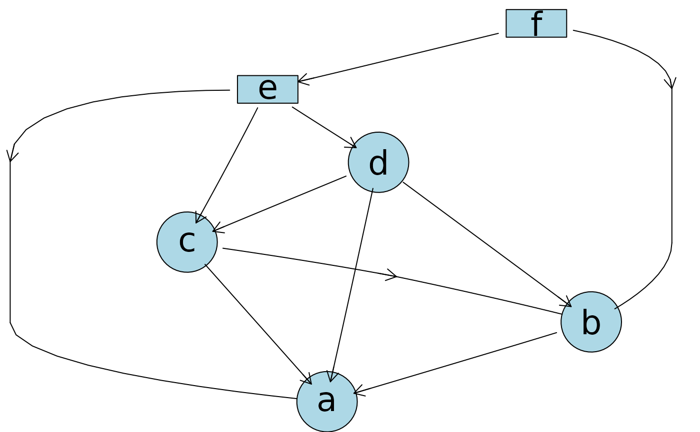
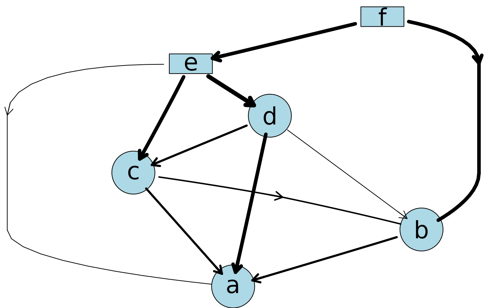
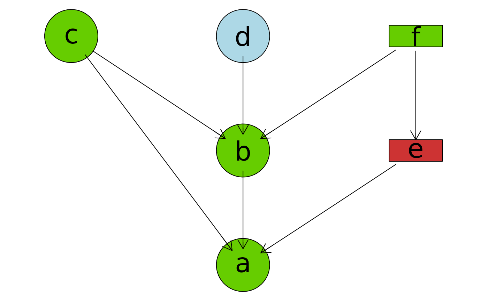
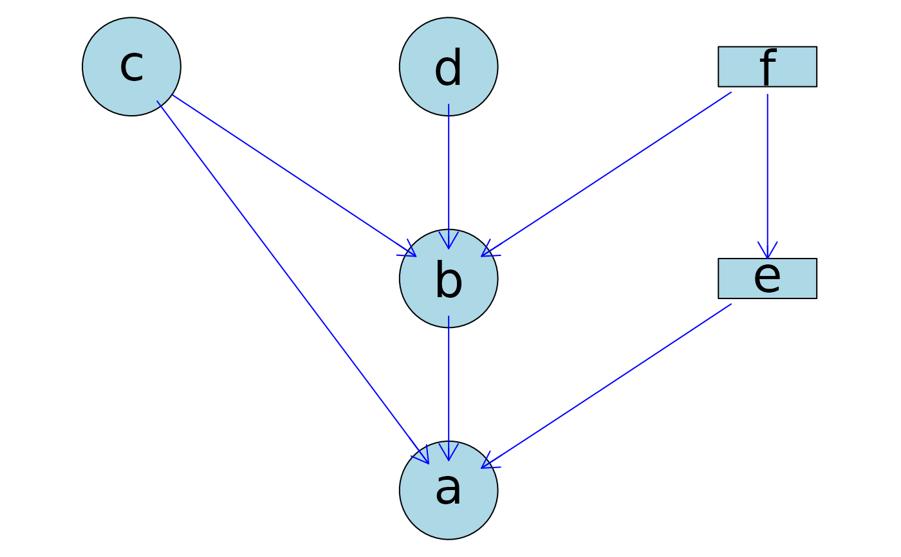
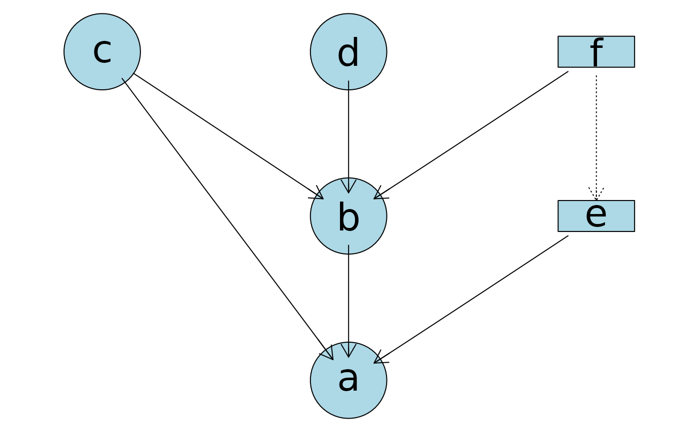

Plot an ABN DAG using formula statement or a matrix in using Rgraphviz through the graphAM class.
Usage
plotAbn(dag, data.dists=NULL, markov.blanket.node=NULL, fitted.values=NULL,
digits=2, edge.strength=NULL, edge.strength.lwd=5, edge.direction="pc",
edge.color="black", edge.linetype="solid", edge.arrowsize=0.6,
edge.fontsize=node.fontsize, node.fontsize=12,
node.fillcolor=c("lightblue", "brown3", "chartreuse3"),
node.fillcolor.list=NULL,
node.shape=c("circle", "box", "ellipse", "diamond"),
plot=TRUE , ...)Arguments
- dag
a matrix or a formula statement (see details for format) defining the network structure, a Directed Acyclic Graph (DAG). Note that rownames must be set or given in
data.dists.- data.dists
a named list giving the distribution for each node in the network, see details.
- markov.blanket.node
name of variables to display its Markov blanket.
- fitted.values
modes or coefficents outputted from
fitAbn.- digits
number of digits to display the
fitted.values.- edge.strength
a named matrix containing evaluations of edge strength which will change the arcs width (could be Mutual information, p-values, number of bootstrap retrieve samples or the outcome of the
linkStrength).- edge.strength.lwd
maximum line width for
edge.strength.- edge.direction
character giving the direction in which arcs should be plotted,
pc(parent to child) orcp(child to parent) orundirected.- edge.color
the colour of the edge.
- edge.linetype
the linetype of the edge. Defaults to
"solid". Valid values are the same as for the R's base graphic parameterlty.- edge.arrowsize
the thickness of the arrows. Not relevant if
arc.strengthis provided.- edge.fontsize
the font size of the arcs fitted values.
- node.fontsize
the font size of the nodes names.
- node.fillcolor
the colour of the node. Second and third element is used for the Markov blanket and node of the Markov blanket.
- node.fillcolor.list
the list of node that should be coloured.
- node.shape
the shape of the nodes according the Gaussian, binomial, Poisson and multinomial distributions.
- plot
logical variable, if set to
TRUEthen the graph is plotted.- ...
arguments passed to the plotting function.
Details
By default binomial nodes are squares, multinoial nodes are empty, Gaussian nodes are circles and poison nodes are ellipses.
The dag can be provided using a formula statement (similar to glm). A typical formula is ~ node1|parent1:parent2 + node2:node3|parent3.
The construction is based on the graph package. Properties of the graph can be changend after the construction, see ‘Examples’.
Examples
#Define distribution list
dist <- list(a="gaussian", b="gaussian", c="gaussian", d="gaussian", e="binomial", f="binomial")
#Define a matrix formulation
edge.strength <- matrix(c(0,0.5,0.5,0.7,0.1,0,
0,0,0.3,0.1,0,0.8,
0,0,0,0.35,0.66,0,
0,0,0,0,0.9,0,
0,0,0,0,0,0.8,
0,0,0,0,0,0),nrow = 6L, ncol = 6L, byrow = TRUE)
## Naming of the matrix
colnames(edge.strength) <- rownames(edge.strength) <- names(dist)
## Plot form a matrix
plotAbn(dag = edge.strength, data.dists = dist)

## Edge strength
plotAbn(dag = ~a|b:c:d:e+b|c:d:f+c|d:e+d|e+e|f, data.dists = dist, edge.strength = edge.strength)

## Plot from a formula for a different DAG!
plotAbn(dag = ~a|b:c:e+b|c:d:f+e|f, data.dists = dist)
## Markov blanket
plotAbn(dag = ~a|b:c:e+b|c:d:f+e|f, data.dists = dist, markov.blanket.node = "e")

## Change col for all edges
tmp <- plotAbn(dag = ~a|b:c:e+b|c:d:f+e|f, data.dists = dist, plot=FALSE)
graph::edgeRenderInfo(tmp) <- list(col="blue")
Rgraphviz::renderGraph(tmp)

## Change lty for individual ones. Named vector is necessary
tmp <- plotAbn(dag = ~a|b:c:e+b|c:d:f+e|f, data.dists = dist, plot=FALSE)
edgelty <- rep(c("solid","dotted"), c(6,1))
names(edgelty) <- names( graph::edgeRenderInfo(tmp, "col"))
graph::edgeRenderInfo(tmp) <- list(lty=edgelty)
Rgraphviz::renderGraph(tmp)
